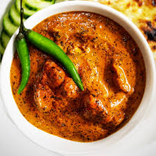

Butter Chicken Recipe

Butter Chicken is porbably my favorite desi food of all time, and its a classic even for those who aren't desi. Its a delicious, creamy chicken recipe that I prefer to put on rice but is just as delicious with roti or naan.
Ingredients you'll need:
- Chicken
- Dehi
- Minced Garlic
- Garam Masala
- Tumeric
- Ground Cumin
- Chili Powder
- Salt